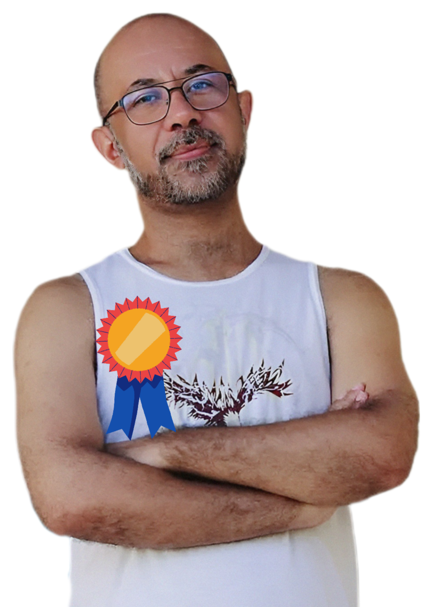

Prêmios

2017
Primeiro lugar em Concurso Público para Professor
de Música: Regência Sopros(Madeiras/Metais).
IFCE - Instituto Federal do Ceará.
2014
Segundo colocado para Professor de Magistério
Superior do Departamento de Música da UFPB -
TUBA, Universidade Federal da Paraíba.